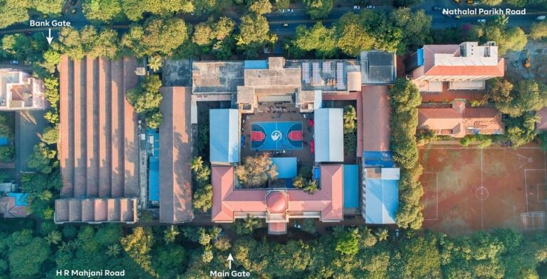

Walk in Interview for Temporary and Visiting Faculty

VJTI Mumbai (estd. in 1887 as Victoria Jubilee Technical Institute) has pioneered India’s Engineering education, research and training ecosystem. Pre-independence, VJTI had been instrumental in driving industrial growth throughout united India. Post-independence, VJTI played a pivotal role in setting up IITs and RECs of India and strengthened technology excellence of country.
In 1997, VJTI changed its name to Veermata Jijabai Technological Institute to honor mother of Chhatrapati Shivaji Maharaj.
Located in South Mumbai, VJTI is an autonomous institution owned by Maharashtra State Government. The institute offers programs in engineering and technology at the diploma, degree, post-graduate and doctoral levels.
VJTI is known for its high quality teaching, collaborative research, industry connect and strong alumni network.